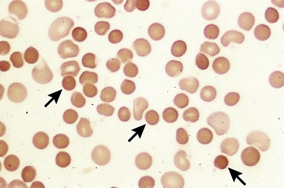

Spherocytes

Peripheral blood smear shows multiple spherocytes, which are small, dark, dense hyperchromic red cells without central pallor (arrows). These findings are compatible with hereditary spherocytosis or autoimmune hemolytic anemia.
Courtesy of Carola von Kapff, SH (ASCP).
Graphic 70611 Version 5.0